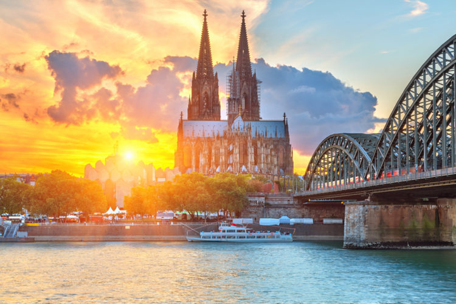

| На главную | Япония | Нидерланды | Северная Корея |
|---|
Германия расположена на холмистой Среднеевропейской равнине, в самом центре Европы. Граничит c Австрией, Люксембургом и Швейцарией на юге, с Бельгией, Данией, Францией и Голландией - на западе и северо-западе, с Чехией на юго-востоке и с Польшей на востоке. Германии принадлежат Восточно-Фризские острова, часть Северно-Фризских островов и о. Гельголанд в Северном море, а также острова Фемарн, Рюген и Худензее, большая часть острова Узедом и ряд маленьких островов в Балтийском море. Общая площадь страны - 357 тыс. кв. км.
Климат Германии умеренный. На севере морской, на остальной территории - переходный от морского к континентальному. Средняя температура самого холодного месяца (январь) от -3ºС до +2ºС, июля - от +16ºС до +20ºС. При этом в силу значительной протяженности страны с севера на юг и влияния морей температурные различия даже на столь относительно небольшой территории порой бывают весьма значительны. Прибрежные районы всегда более прохладны и влажны, чем юг, и в то же время центральные районы страны славятся своим приятным климатом практически круглый год. Осадков выпадает до 2000 мм в год на юге и до 710 мм в год - на севере, в основном в осенне-зимний период.
Несмотря на непонятно откуда взявшееся мнение, Германия обладает довольно разнообразной и оригинальной кухней, унаследованной от многочисленных племен, проживающих или проживавших на этой территории. При изобилии общих для всех германских народов тенденций кулинария здесь довольно заметно отличается от региона к региону. Едят здесь много и сытно, не торопясь и весьма основательно - такова же и местная кулинария.
Принято считать, что немцы в любое время дня и ночи едят свиные сосиски с кислой капустой и запивают все это пивом, однако это мало соотносится с действительностью. Творческий потенциал местных поваров и высокие стандарты качества давно вывели немецкую кухню на одну из ведущих позиций в Европе.
Самый популярный вид мяса в Германии - свинина, среднестатистический житель страны съедает её в год примерно 84 кг! А основное применение - знаменитые немецкие колбаски и сосиски - только первых в стране делают около 1500 видов.
Немецкие супы в большинстве своем очень густые и сытные, изобилуют рублеными овощами и мясом. Самый известный продукт такого рода - "айнтопф", представляет собой густой суп, заменяющий сразу первое и второе блюда. По сути это целый класс рецептур, включающий в себя огромное количество комбинаций. Единое здесь одно - свежее мясо обжаривается или тушится, затем заливается бульоном и обильно заправляется овощами или бобовыми.
|
На самой высокой точке Соборного холма в Кёльне расположился истинный шедевр готической архитектуры - Кёльнский Кафедральный Собор. Он официально именуется, как Кафедральный собор святых Петра и Марии. Один только внешний вид этого собора вызывает неподдельное восхищение. Архитектура величественного сооружения будто бы соткана из кружева каменных башен, колонн и пилястр, объединенных в единой архитектурной композиции. А общая форма здания, если смотреть сверху, выполнена в форме латинского креста. Важнейшей достопримечательностью Германии Кёльнский собор стал не только благодаря своему внешнему виду, но и благодаря богатейшей истории.

При первом взгляде на фасад замка Нойшванштайн издалека, возникает устойчивая ассоциация этого удивительного по красоте сооружения с игрушкой. Настолько неправдоподобной кажется эта красота аккуратных башенок цвета слоновой кости, увенчанных заострёнными изумрудными куполами. Ещё большей сказочности придаёт невероятно красивый природный фон в виде альпийских склонов, утопающих в зелени лесов. Замок Нойшванштайн можно смело включить в рейтинг самых красивых мест мира!
Появилось эта потрясающая достопримечательность Германии по инициативе баварского короля Людвига II, который воплотил в замке свои фантастические представления и романтические замыслы. Первый камень лёг в фундамент будущего замка в 1869 году. Изначально установленный 3-летний срок строительства отодвигался не один раз: существенные сложности создавала и трудоёмкость проекта, и расположение участка в горах, а также непрестанные коррективы, которые вносил в проект сам монарх.

Если вам интересно, какая достопримечательность Германии является истинным символом страны, и что посмотреть в Германии следует прежде всего, то вам обязательно стоит увидеть Брандербургские ворота. Это поистине легендарное сооружение, впечатляющее своими размерами, архитектурой и символизирующее важнейшие вехи истории страны.

Эта достопримечательность Германии располагается в самом центре немецкой столицы, на Парижской площади. В 1884 году в фундамент здания был заложен первый камень, а строительство продолжалось на протяжении последующих 10 лет. В 1933 году сооружение сильно пострадало от случившегося там пожара. В то время виновным признали бывшего независимого коммуниста Маринуса ван дер Люббе, однако нацисты во всём обвинили коммунистов, и это послужило поводом для коммунистического переворота. Управляющий орган Рейхстага был распущен, а все заседания с того момента стали проводиться в Кроль-Опере. В течение 12 лет с того момента здание Рейхстага не использовалось по назначению, а в 1939 году стало выполнять роль здания военного назначения.

Удивительно прекрасный замок Гогенцоллерн, расположенный в регионе Баден-Вюртемберг, в 50 км на юг от Штутгарта, часто называют «замком в облаках». Необычайное по красоте сооружение возвышается на вершине горы, в окружении туманов и низких облаков. И поэтому больше напоминает видение из некой сказки, нежели реальное строение. Неспроста Гогенцоллерн считается одной из самых красивых достопримечательностей Германии.
Вверх